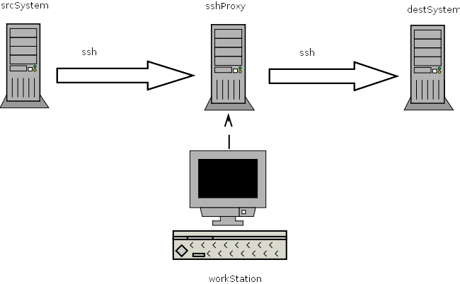

Create a flar over a ssh tunnel (nfs port forwarding)
Create a flar over a ssh tunnel (nfs port forwarding)
- Overview
Small how-to create a flar archive over a ssh tunnel on solaris.

- Logon to the ssh proxy server
staf@workstation:~$ ssh -R 3049:destSystem:2049 staf@sshproxy - Logon to the srcSystem
[swagemak@sshproxy]$ ssh -R 3049:127.0.0.1:3049 root@destSystem - Mount the backup filesystem on the srcHost
[ROOT@scrSystem] # mount -o port=3049 nfs://localhost/backup /mnt - Verify that the backup file system is mounted
# df -h
Filesystem size used avail capacity Mounted on
/dev/md/dsk/d20 8.8G 1.7G 8.1G 18% /
/dev/md/dsk/d24 12G 2.9G 8.8G 26% /usr
/proc 0K 0K 0K 0% /proc mnttab 0K 0K 0K 0%
/etc/mnttab fd 0K 0K 0K 0% /dev/fd
/dev/md/dsk/d25 12G 6.0G 5.7G 52% /var
swap 5.3G 24K 5.3G 1% /var/run
swap 512M 369M 143M 73% /tmp
/dev/md/dsk/d23 12G 2.6G 9.2G 22% /opt
nfs://localhost/backup 33G 15G 18G 47% /mnt - Create the flar
[ROOT@srcSystem] # cd /mnt
[ROOT@srcSystem] /mnt # touch boe
[ROOT@srcSystem] /mnt # flarcreate -S -n srcSystem srcSystem.flar
Full Flash Checking integrity...
Integrity OK. Running precreation scripts...
Precreation scripts done.
Creating the archive...
| flarssh_01.png | 8/8/2011 2:01 pm | 13 kB |
{kind=link}